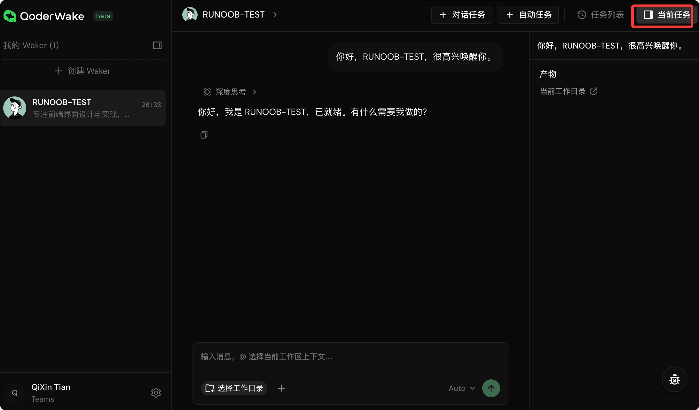
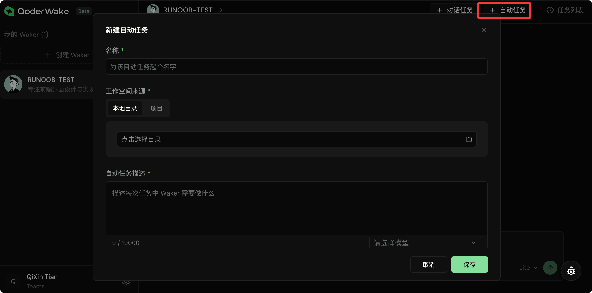

Tutorial de introducción a QoderWake
QoderWake te permite formar un equipo de empleados digitales (Wakers) en tu máquina local. Cada empleado tiene un puesto, un nombre, una personalidad y especialidades, y puede ser convocado para chatear o trabajar, o iniciarse automáticamente según planes o eventos.
Concepto central del producto: empleados digitales 24/7,"Always awake, always working."

QoderWake es una plataforma de gestión de empleados digitales que admite implementación local y en la nube.
Características principales: seguro y controlable, listo para producción, mejora continua.
-
Conceptos centrales: rol de empleado (Role) → empleado digital (Agent) → equipo/organización (Agent Teams), una progresión de tres niveles.

Después de completar el registro, haga clic en la esquina superior derecha enDescargarBotón:

selecciónQoderWakeOpción: según el sistema de tu computadora, descarga el programa de instalación:

Después de la descarga, haz doble clic para instalar. La interfaz después de la instalación es la siguiente:

El botón de configuración en la esquina inferior izquierda permite cambiar el idioma; al cambiar a chino, se muestra lo siguiente:

Lista de roles disponibles
La prueba actual cubre los siguientes roles; elige el que mejor se adapte a tus necesidades:
| personaje | Características del puesto |
|---|---|
| Ingeniero de backend | Enfocado en desarrollo de API, modelado de datos, integración de servicios, optimización de rendimiento y estabilidad en producción. Sigue prácticas de ingeniería como entrega incremental, verificación mediante pruebas y diseño guiado por convenciones. El empleado analiza automáticamente Bugs/Issues y, tras modificar el código, envía directamente un PR. |
| Ingeniero de frontend | Enfocado en el diseño e implementación de interfaces frontend, con experiencia en arquitectura de componentes, refinamiento del lenguaje visual, adaptación responsiva, optimización de accesibilidad y ajuste de rendimiento. Sigue entrega incremental, verificación por capas y validación basada en evidencia, equilibrando la experiencia del usuario con la calidad de la ingeniería. |
| Ingeniero de pruebas | Rol de aseguramiento de calidad orientado a herramientas de línea de comandos y productos web en general, centrado en documentación de plan de pruebas, pruebas de extremo a extremo, reproducción de defectos e informes basados en evidencia; no ejecuta pruebas unitarias ni corrige problemas. |
| Gerente de producto | Rol de gestión de producto nativo de IA para productos de software, centrado en la gestión del ciclo de vida de requisitos impulsada por objetivos, generación de PRD, análisis de comentarios de usuarios, investigación de competidores y comunicación de lanzamientos, con compuertas de aprobación explícitas para escrituras externas. |
| Analista de datos | Analista de datos nativo de IA orientado al encuadre de problemas, definición de métricas, recopilación de datos, diagnóstico de datos, contexto de mercado y recomendaciones basadas en evidencia. |
| Operaciones de contenido | Rol de operaciones de contenido nativo de IA orientado a posicionamiento de cuentas, detección de tendencias, calendario de contenido, creación de notas en Xiaohongshu, briefs de material visual, publicación tras aprobación, interacción con comentarios, análisis de datos, cumplimiento de marca y adaptación multiplataforma. |
| personalizado | Define tú mismo la forma de trabajo y el flujo de trabajo del puesto; se pueden montar MCP, Skills y cualquier otra configuración. |
Descripción del entorno de instalación
QoderWake admite implementación local y en la nube.
Se recomienda implementar en dispositivos siempre encendidos o entornos de escritorio en la nube con buena conexión y estabilidad en línea, para garantizar la operación continua 7x24 de los empleados digitales.
La versión para Windows está próximamente; por ahora no está disponible públicamente. Usa macOS o Linux primero.
Requisitos de implementación local
Se recomienda implementar en un dispositivo local que pueda funcionar de forma estable durante mucho tiempo, como Mac mini, para obtener una mejor experiencia de operación 7x24.
| sistema | Requisitos de versión |
|---|---|
| macOS | Versión 13.0 o superior. |
| Linux | Se recomienda Ubuntu 22.04 LTS o superior; se debe habilitar el escritorio GUI para usar la Web Console local. |
Requisitos de implementación en la nube
Compatible con entornos principales de escritorio en la nube y servidores en la nube.
Para facilitar el inicio de sesión mediante navegador y la administración web local, se recomienda usar la edición empresarial o personal de Wuying Cloud Computer.
Herramienta previa
El producto incluye múltiples roles de empleados digitales de desarrollo de software preconfigurados. Antes de la instalación, prepara el entorno Git y confirma que la cuenta actual puede acceder normalmente al repositorio de código objetivo:
- instaladogit
- Configuración de autenticación del repositorio completada.
- Puede ejecutarse normalmenteclone、pull、pushoperación
Tanto el entorno de implementación local como el de la nube deben permitir el acceso a redes externas, para inicio de sesión de usuarios, invocación de modelos, acceso a repositorios de código, etc.
En entornos con red corporativa, proxy o firewall, habilita previamente el acceso HTTPS saliente necesario.
Paso 1: Instalar QoderWake.
Elige el método de instalación correspondiente según tu sistema operativo.
Instalación en macOS
Opción 1: Descargar el paquete de instalación directamente.
- Chip de Apple (ARM)：Descargar versión ARM
- Chip Intel：Descargar la versión Intel
Opción 2: Instalar con un clic desde la terminal.
# 一键安装命令，自动检测平台并完成安装 curl -fsSL https://qoder-ide.oss-ap-southeast-1.aliyuncs.com/qoderwake/install.sh | bash
El script completará automáticamente: detección de plataforma, descarga y verificación del paquete de instalación, instalación del programa principal y los archivos de recursos, agregar el comando de entrada al PATH, iniciar el inicio de sesión en el navegador, iniciar el servicio residente local y abrir la Web Console.
Después de la instalación, el comando de entrada es:
~/.qoderwake/bin/qoderwake
Instalación en Linux
Abre la terminal y ejecuta el mismo comando de instalación con un clic que en macOS.
El script de instalación completará automáticamente los siguientes pasos:
- Detectar la arquitectura de la CPU Linux.
- Descarga y verifica el paquete de instalación de QoderWake para la plataforma correspondiente.
- Instala el programa principal de QoderWake y los archivos de recursos.
- Crear el comando de entrada e intentar agregarlo al PATH.
- Inicie el navegador e inicie sesión
- Después de iniciar sesión, iniciar o reiniciar el servicio residente local
- Abrir automáticamente la Consola Web local
Entrada de comandos:
~/.qoderwake/bin/qoderwake
Dirección predeterminada de la Web Console:
http://127.0.0.1:19820
Paso 2: Abrir la consola.
Acceso por navegadorhttp://127.0.0.1:19820/, esta es la consola de administración de QoderWake en tu máquina local.
La gestión de empleados, la asignación de tareas y la configuración de permisos se realizan aquí.

Explicación del diseño de la interfaz
| área | Descripción de funciones |
|---|---|
| Barra lateral izquierda | Muestra la lista "Mis Wakers", mostrando todos los empleados creados y la hora de la actividad más reciente. |
| Botón superior | Haz clic en "Crear Waker" para crear rápidamente un nuevo empleado; en el lado derecho se puede crear una nueva tarea. |
| área principal | Al entrar en un empleado, se abre la página de chat por defecto, donde se pueden asignar tareas directamente. |
| Barra lateral derecha | Ver los detalles de las tareas creadas y de las tareas actualmente en ejecución. |
El primer acceso te guiará para iniciar sesión con tu cuenta; solo sigue las indicaciones.
Paso 3: Crear un empleado digital.
Clic en el lado izquierdo"Crear Waker"El botón conduce al proceso de creación.

Proceso de creación
- Selecciona una plantilla de rol:Cada plantilla de rol viene con personalidad, flujo de trabajo típico, conjunto de habilidades principales y preguntas predeterminadas. Haz clic en "Ver detalles" para previsualizarla.
- O rol personalizado:Si ninguno de los roles predefinidos es adecuado, puedes elegir "Rol personalizado" y definir completamente la personalidad, las especialidades y el estilo de trabajo de este empleado, configurando después sus habilidades, conectores y permisos.
- Completar información básica:Completa el nombre, el avatar y la descripción del empleado. Al seleccionar un rol predefinido, el contenido se rellena automáticamente y se puede ajustar según sea necesario.
- Guardar:Al hacer clic en Guardar, el empleado queda creado. Después de la creación inicial, el nuevo empleado entra en una guía que recomienda qué habilidades asociar y qué canales conectar; se puede omitir y configurar más adelante.
Para mejorar el rendimiento de los roles personalizados, se recomienda proporcionar información lo más completa posible al crearlos: posicionamiento del rol, responsabilidades principales, flujo de trabajo, habilidades necesarias y configuración de capacidades de herramientas como MCP.
Paso 4: Empezar a trabajar con el empleado.
Después de crear el nuevo empleado, se puede elegirConversación directaoCrear tarea automáticaDos formas de asignar tareas.
Tarea de conversación
Introduce la solicitud directamente en el campo de entrada y envíala; el empleado comenzará a trabajar.

Operaciones que puedes realizar durante el proceso:
| operación | Descripción |
|---|---|
| Preguntar, ajustar el rumbo | Intervenir en cualquier momento; el empleado continuará con el contexto. |
| Adjuntar archivo/captura de pantalla | En cualquier turno de conversación se pueden adjuntar archivos. |
| interrumpir | Si el empleado se desvía del objetivo, puedes pedirle que se detenga. |
| Operación de aprobación | Cuando el empleado vaya a tocar archivos, ejecutar comandos o acceder a internet, se detendrá para pedir tu consentimiento; haz clic en "Permitir" o "Denegar". |
| Responder preguntas de los empleados | Ante una elección, te consultará; selecciona directamente en la tarjeta. |
| Cambiar el modelo de IA | Si en medio de la conversación sientes que no es lo suficientemente inteligente o quieres ahorrar, puedes cambiar de modelo en el menú desplegable superior para continuar. |
| Ver el proceso de razonamiento | Puedes ver en tiempo real el razonamiento del empleado antes de tomar una decisión. |
| ver artefactos | El panel derecho muestra en tiempo real los parches de código producidos por el empleado, los archivos recién generados, etc. |
| Seleccionar directorio de trabajo | En la parte inferior del chat se puede seleccionar el directorio local donde trabaja el empleado. |
Tarea automática
Adecuado para escenarios como "ejecutar una vez al día" o "responder automáticamente cuando se detectan cambios en un repositorio".

entrarDetalles de Waker - Tarea de activación - Nueva, se puede configurar lo siguiente:
| elemento de configuración | Descripción |
|---|---|
| Nombre y descripción de la tarea | El empleado lo lee y sabe qué debe hacer. |
| Modelo de IA | Seleccionar el modelo a usar |
| Directorio de trabajo | En qué directorio local, repositorio o espacio de trabajo de proyecto debe ejecutar. |
| Métodos de activación (máximo 5). | Programado (único/periódico/complejo), impulsado por eventos (escucha de cambios en repositorios de GitHub) y callback web (sistemas de terceros que activan directamente mediante una dirección fija). |
| Máximo de veces/fecha límite (opcional) | Limitar las tareas para que no se ejecuten indefinidamente. |
Después de guardar, el empleado trabaja automáticamente según el ritmo que hayas establecido.
Puedes pausar/activar, ejecutar pruebas inmediatamente y ver el historial de ejecuciones en cualquier momento.
Paso 5: Gestionar tus empleados digitales.
Al entrar en la página de detalles del empleado, puedes ver y ajustar toda su configuración.
| índice | Descripción de funciones |
|---|---|
| Inicio | Ver avatar, estado, días desde la incorporación, número de tareas activadas, número de tareas de conversación y mapa de calor de trabajo. |
| Proyecto | Asígnale el repositorio de código o el directorio local en el que debe trabajar. Un proyecto puede incluir múltiples fuentes (varios directorios o repositorios). La memoria del proyecto está separada de la memoria personal del empleado. |
| Tarea de activación | Añadir/eliminar/modificar/pausar sus tareas automatizadas. |
| Tarea de conversación | Revisar el historial de conversaciones para continuar charlando. |
| Memoria | Ver/editar su conocimiento a largo plazo sobre ti y el proyecto. Fuentes: acumulación automática durante las conversaciones, edición manual y revisión/deduplicación periódica por el sistema. Almacenamiento local; no se sube a la nube. |
| Habilidad | Instala desde el Skills Marketplace oficial de Qoder, sube localmente habilidades personalizadas o activa/desactiva habilidades existentes. Las habilidades integradas no se pueden desinstalar. |
| conector | Integración con herramientas/servicios externos (GitHub, Jira, GitLab, etc.) |
| Permisos | Protección de herramientas, protección de archivos y políticas de herramientas integradas. Las operaciones de alto riesgo mostrarán tarjetas de aprobación. |
Explicación detallada de la configuración de los empleados
Gestión de memoria
Cada empleado tiene su propia memoria a largo plazo para acumular conocimiento sobre ti y el proyecto.
Hay tres fuentes de memoria:
| Fuente | Descripción |
|---|---|
| Acumulación automática | Durante las conversaciones, la información que el empleado considere digna de recordar se escribirá automáticamente. |
| Escritura manual | Puedes ingresar a la página de memoria y editarla directamente. |
| Organización sistemática | El sistema la organiza y deduplica periódicamente. |
entrarDetalles del empleado - Memoria, se pueden ver, buscar y editar todas las entradas de memoria.
La memoria se almacena localmente y no se sube a la nube.
Habilidad (Skill)
Las habilidades son paquetes de capacidades especializadas que el empleado puede invocar en conversaciones o tareas activadas.
- Mercado de habilidades:Instalar desde el Skills Marketplace oficial de Qoder
- Subir Skill:Importación local propia
- Habilidades integradas:Viene incluida con el sistema y no se puede desinstalar.
entrarDetalles del empleado - Habilidades, se pueden ver las habilidades instaladas, buscar en el mercado y subir habilidades personalizadas.
Conector (Connector)
Los conectores son puentes entre el empleado y herramientas/servicios externos; se pueden añadir conectores manualmente.
Proyecto
El proyecto es el espacio de trabajo del empleado.
entrarDetalles del empleado - Proyectos, puede vincular un directorio local o un repositorio git. Un proyecto puede contener múltiples fuentes (múltiples directorios/repositorios). El proyecto tiene memoria independiente, separada de la memoria personal del empleado.
Gestión de permisos
Los permisos controlan qué puede y qué no puede hacer el empleado.
entrarDetalles del empleado - Permisos, incluye dos categorías principales de protección, además de las políticas de herramientas integradas.
Protección de herramientas
Valida los parámetros de las herramientas basándose en reglas de seguridad integradas; al coincidir con reglas de alto riesgo, se solicita autorización al usuario.
| Clasificación de reglas | Contenido de detección |
|---|---|
| Inyección de comandos | Detectar operaciones peligrosas como rm, mv, etc. |
| Abuso de recursos | Detecta fork bombs, reinicios del sistema, etc. |
| Ejecución de código | Detecta ejecuciones remotas como curl | bash. |
| Abuso de red | Detecta reverse shells y accesos a localhost. |
| Acceso a archivos confidenciales | Detectar el acceso a archivos críticos del sistema. |
| Escalada de privilegios | Detectar operaciones de elevación de privilegios como sudo, etc. |
Protección de archivos
Controla los permisos de lectura/escritura del empleado sobre archivos locales.
Herramienta integrada
Configuración de las herramientas integradas disponibles para los Wakers.se permite/Consulta/DeshabilitadoEstrategia.
Cuando la ejecución de una operación por parte del empleado activa una regla de seguridad, aparece una tarjeta de aprobación para que decidas si la permites.
Ejemplo de escenario: Corrección automática de errores.
Dos modos de activación permiten implementar la corrección automática de bugs.
Método A: Iniciar conversación manualmente.
- Abre la consola y selecciona uno.Ingeniero de backendWaker del rol
- Introduce la solicitud en el cuadro de diálogo y adjunta la información del error.
- El empleado analiza el problema, localiza la causa raíz y ofrece un plan de corrección.
- Una vez confirmado, pídele que ejecute la corrección y envíe un PR.
Ejemplos
# "Ayúdame a investigar la causa raíz de este error y dame la solución mínima de reparación"
# El empleado realizará operaciones similares a las siguientes:
# 1. Analizar el registro de errores y localizar el código problemático
# 2. Proporciona un plan de corrección para que lo confirmes
# 3. Ejecutar la corrección de código
# 4. Enviar el PR al repositorio de código
Durante el proceso, si necesita ejecutar comandos o modificar archivos, primero pedirá tu consentimiento.
Método B: Configurar tareas automáticas.
- entrarDetalles del empleado - Tarea de activación - Nueva
- Selección del método de activación"Evento", monitorear los cambios de Issues en los repositorios de GitHub
- Escribir la descripción de la tarea:"Cuando entra un nuevo Bug Issue, analiza automáticamente y proporciona un PR de corrección."
- Después de guardar, cada vez que aparezca un nuevo Issue de Bug en el repositorio, el empleado inicia automáticamente el análisis y la corrección.
Cada método tiene sus escenarios de uso: el método A es adecuado para solucionar problemas temporales y únicos; el método B es adecuado para operaciones de mantenimiento automatizadas continuas, reduciendo la intervención manual.
Preguntas frecuentes
¿No puedes abrir la Web Console después de la instalación?
Confirmar si el servicio local se está ejecutando correctamente, comprobarhttp://127.0.0.1:19820si es accesible.
Si hay conflicto de puertos, puede comprobar si otros programas están ocupando el puerto 19820.
¿El empleado se queda atascado al ejecutar una tarea?
Compruebe si el empleado necesita su aprobación y vea si hay tarjetas de aprobación pendientes en la ventana de conversación.
¿El rol personalizado no funciona bien?
Se recomienda proporcionar información completa del rol al crearlo: incluyendo posicionamiento del rol, responsabilidades principales, flujo de trabajo, habilidades necesarias y configuración de capacidades de herramientas como MCP. Cuanta más información completa, mejor será el resultado.
¿Cómo informar de un problema?
Si encuentra algún problema o desea enviar comentarios sobre funciones del producto, haga clic en el botón de comentarios en la esquina inferior derecha de la consola para enviarlo. El equipo responderá y resolverá lo antes posible.
Otras extensiones
Haz clic en mí para compartir notas
¡La nota debe ser una extensión del contenido de este artículo!
Para enviar artículos, haga clic aquí
Cómo obtener el código de invitación de registro
Antes de compartir la nota, debes iniciar sesión!
Cómo obtener el código de invitación de registro